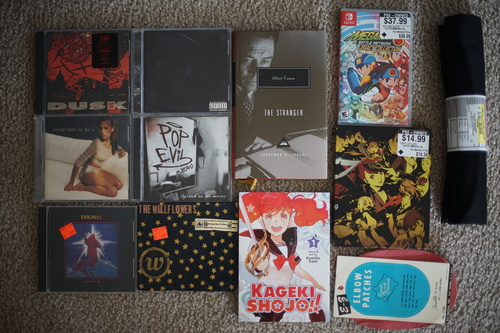
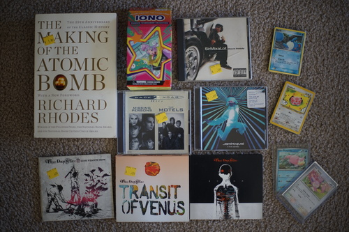
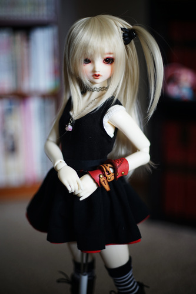
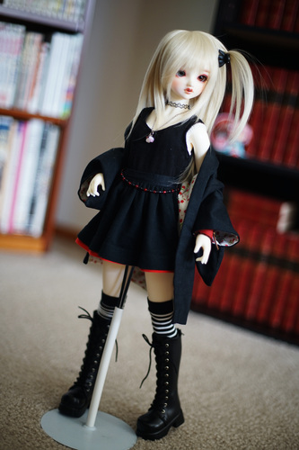
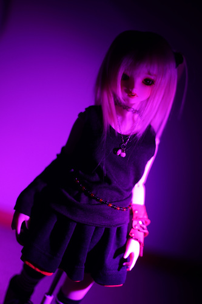
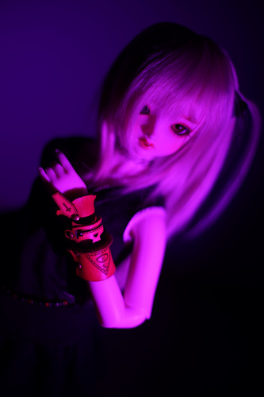
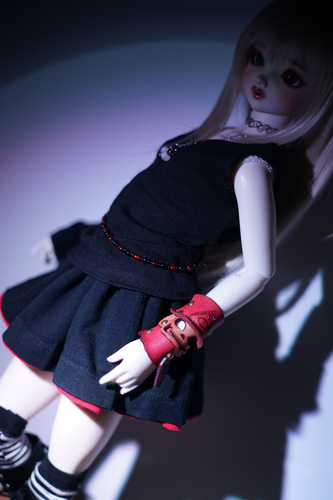

OKAY! Here is attempt 3 at talking about Tiny Tim. I know you have been all waiting excitedly for it for the last couple weeks. A few people commented on my itabag and asked if the guy in the photo was young Weird Al. Only 2 people recognized him as Tiny Tim. He was sent home with the two, Flan and Tae. I'm honestly really shocked anyone could talk to me with a straight face and also that he wasn't recognized.
I'm sure a lot of my viewers are 13 years old (go outside), so I'll bring him to your attention. Go to youtube and look up Tiptoe through the Tulips and Living in the Sunlight. Now that you are initiated, my dear 13 year old anti-shipper (whatever that means), please watch his televised wedding.
Next time I make a Tiny Tim joke, I expect one laugh minimum.

Ryan took me shopping~~~ I love shopping~~~
No one in this band anticipated google.
Ryan was complaining that his copy made noises when you moved the spine! Must have been very annoying!
Ryan's, but it looks pretty kawaii.
Ryan's.
I've seen this one around a lot, but wasn't willing to pay $3 for it. It's good though. Would recommend.
I misread the title and googled "wallflowers burning down the house". It wasn't helpful. Ryan said there was a good song on it so I picked it up anyway.
Eh?! It's a sequel?! This series is already too complicated.
I actually don't own this game in any form. Not sure if I'm willing to play it a second time for Royal.
I hope my master plan to make a camera strap with this works out!
I was desperate enough to buy a remnant and not wait for more to show up at the thrift store.
Ryan suggested one of these for storing doll patterns and it's crazy enough it just might work
I ran out a few months ago
Also included: lots more pen and pencil trash
Yeah, I am that weirdo who takes stickers off posts.
I want to be as cool as the guy inside wearing monpe on a skateboard with a parrot.
I'm going to ignore the dates because I want a fountain pen friendly notebook for secret reasons. Why does my favorite pen bleed through everything ;_;
This is not good and the longest track is 2:36 with most of them being under 2 minutes.
It wasn't vacuum sealed, but was sealed with a sticky cover. Is it that bad?! I really like their sound.
Score!!!! It's a greatest hits, but has a few songs I haven't been able to find yet, some from a movie OST I didn't know about, with a few more that aren't released elsewhere. Not a single song from Fungus Amongus is on this! I'll never find that CD. The oldest song is an acoustic version of a song from S.C.I.E.N.C.E. on it.
SCORE!!!!!! I love them so much omg. I need all of their albums released in the 80s. I can only find greatest hits albums and it's very frustrating.
I hope the guy on /g/ who posts his Sia themed battlestation has some taste in music. This purchase was for you, dude.
Why hasn't anyone asked to come rip my CD collection yet? Wait, are you all using spotify?!
Ryan's. I seriously hope they make a Grusha one because I will buy it.
Ryan's
I bought this for suddenly next summer, but I think I'll have to buy any albums I see for both of these groups now!!! Glad I grabbed it.
mfw I open up this paper case to 4 signatures *o*
There was a really stinky dude in the card shop who was very generous with his new pokemon card collection he started yesterday. He was really kind but I will not deny his smell.
More scary Hina? More scary Hina!!! Every version of Hina is perfect. It was 2 years ago when I first discovered scary Hina and also that Liam is her favorite fashion accessory.
I made her a skirt out of two old tshirts. The black shirt was one of mine and the red was Ryan's madotsuki shirt. Not sure why it was red. It is actually double layered and oh my gosh that waistband is thick. I probably should have faked the layering. She's wearing Cheby's black tank top, but I really need to pattern one that fits her better.
 And now, it's Hina's turn for a midnight photoshoot
  
I put the leather ring I was given at the h.NAOTO VIP event on Hina's arm and it's a tight fit, but it works! What a spooky lil top hat skeleton guy. It's not really my personal style, but it's cute on my Hina. She gets to wear brand!!!
Ryan says I'm just recreating Misa Amane, but is that so bad???